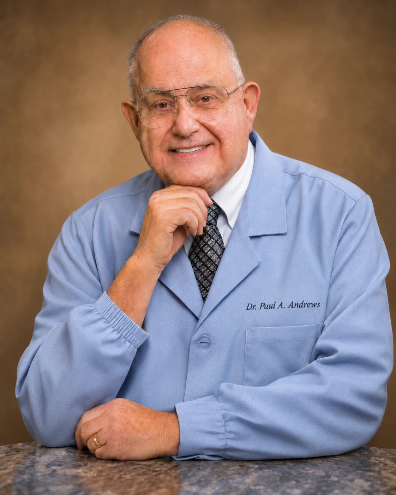

Dr. Paul A. Andrews, DDS, PhD
Dr. Andrews practises general dentistry in Lake Mary, Florida, with particular attention to the jaw: how it moves, where discomfort comes from, and what can reasonably be done about it.
Patients who come in about jaw pain or facial discomfort often describe being listened to carefully before anything is recommended. That emphasis on understanding first is what this site is built around.
Alongside patient care, Dr. Andrews is listed publicly as working in dental consulting and expert opinion for professional and legal matters. That work is kept on its own page so it is never mistaken for a bookable treatment.
- DDS
- PhD
- General Dentistry
- TMJ & Facial Pain
- Lake Mary, Florida
What this page does not say
Writing a convincing dentist biography is easy. Writing a true one needs the dentist.
So this page states only what public listings support: the name, the stated qualifications, the Lake Mary location, and the areas of work those listings describe. Everything a practice biography usually contains has been deliberately left out rather than invented:
- Years in practice
- Dental school, training and postgraduate work
- Awards, honours and recognitions
- Professional memberships and affiliations
- Clinical accomplishments, case numbers and outcomes
- Personal background, family and interests
Where the attention goes.
General Dentistry
Everyday dental care, examinations and the work that keeps small problems small.
TMJ & Facial Pain
Jaw discomfort, movement and related facial pain, with time given to understanding the cause.
Professional Consulting
Dental consulting and expert opinion for legal and professional matters, handled separately from patient care.
Have a question for Dr. Andrews?
Get in touch and describe what you would like to discuss.